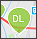
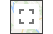
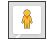
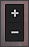
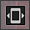
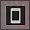

Značka pro grafické zobrazení GPS souřadnic adresy. Tato značka ukazuje přesné místo tabletu.
 Značka pro každou adresu všech dlužníků v kampani.
Roztažení mapy na celou obrazovku. Do původního zobrazení se uživatel vrátí opakovaným kliknutím na ikonku. Funkce je přístupná i v zobrazení Street view.
Ikona Street View - funkcionalita map Googlu, která slouží k možnosti prohlédnout si vybranou oblast ve 3D zobrazení.
 Ikonky pro přiblížení či oddálení mapy.
 Ikonka pro ovládání obrazu (pouze při spuštění funkce Street view). Pokud je zobrazena tato ikonka, otáčním tabletu si uživatel prohlíží na tabletu vybrané místo. Vypnout/zapnout tuto funkci je možné opakovaným kliknutím na ikonku (tato funkce je přístupná podle typu tabletu a verze systému).